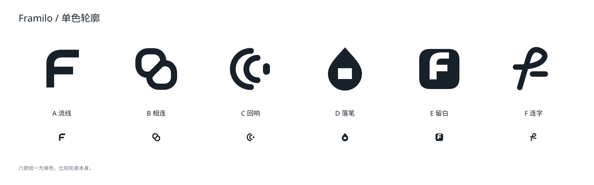

<!doctype html><html lang="zh-CN"><meta charset="utf-8"><meta name="viewport" content="width=device-width,initial-scale=1"><title>Framilo · 新方向</title><style>*{box-sizing:border-box}body{background:#edf0f2;color:#18212a;margin:0;font-family:"Segoe UI","Microsoft YaHei",sans-serif}main{max-width:1536px;padding:40px 48px;margin:auto}header{display:flex;justify-content:space-between;align-items:baseline;margin-bottom:30px}h1{font-size:44px;margin:0;font-weight:600;letter-spacing:-1.4px}header p{font-size:16px;color:#667584}.grid{display:grid;grid-template-columns:repeat(3,minmax(0,1fr));gap:24px}svg{display:block;width:100%}a{color:inherit;text-decoration:none}a:focus-visible{outline:2px solid #6f99b9;outline-offset:5px}footer{margin-top:24px;font-size:13px;color:#667584}.mono{margin-top:32px}h2{font-size:19px;font-weight:500}.mono img{width:100%}@media(max-width:1000px){main{padding:24px}.grid{grid-template-columns:repeat(2,minmax(0,1fr))}}@media(max-width:600px){.grid{grid-template-columns:1fr}header{display:block}.mono{overflow:auto}.mono img{min-width:800px}}</style><main><header><h1>Framilo</h1><p>六个新方向 / 曲线、负形与字标</p></header><section class="grid"><article><a href="a-flow.svg" aria-label="查看A 流线"><svg xmlns="http://www.w3.org/2000/svg" viewBox="0 0 464 458" role="img" aria-label="A 流线" font-family="Segoe UI,Microsoft YaHei,sans-serif"><rect width="464" height="458" fill="#080c10"/><text x="24" y="37" font-size="15" fill="#8da2b3" font-weight="600" >A</text><text x="53" y="37" font-size="17" fill="#f5f7f8" font-weight="500" >流线</text><g transform="translate(168 77) scale(1)"><path fill="#f5f7f8" d="M24 112V49C24 27 40 14 63 14H108V34H65C51 34 44 41 44 53V58H93V78H44V112Z"/><path fill="#9ebfd8" d="M65 14H108V34H65Z"/></g><text x="232" y="266" font-size="39" fill="#f5f7f8" font-weight="500" font-family="Segoe UI, sans-serif" letter-spacing="-1.4" text-anchor="middle">Framilo</text><path d="M24 311H440" stroke="#26313a"/><g transform="translate(28 341) scale(0.125)"><path fill="#f5f7f8" d="M24 112V49C24 27 40 14 63 14H108V34H65C51 34 44 41 44 53V58H93V78H44V112Z"/><path fill="#f5f7f8" d="M65 14H108V34H65Z"/></g><g transform="translate(80 337) scale(0.1875)"><path fill="#f5f7f8" d="M24 112V49C24 27 40 14 63 14H108V34H65C51 34 44 41 44 53V58H93V78H44V112Z"/><path fill="#f5f7f8" d="M65 14H108V34H65Z"/></g><g transform="translate(132 333) scale(0.25)"><path fill="#f5f7f8" d="M24 112V49C24 27 40 14 63 14H108V34H65C51 34 44 41 44 53V58H93V78H44V112Z"/><path fill="#f5f7f8" d="M65 14H108V34H65Z"/></g><text x="440" y="354" font-size="11" fill="#8da2b3" font-weight="400" text-anchor="end">16 / 24 / 32px</text><text x="24" y="409" font-size="15" fill="#f5f7f8" font-weight="400" >柔和的转弯，开放的轮廓。</text><text x="24" y="438" font-size="11" fill="#8da2b3" font-weight="400" >单色与小尺寸对照</text></svg></a></article><article><a href="b-link.svg" aria-label="查看B 相连"><svg xmlns="http://www.w3.org/2000/svg" viewBox="0 0 464 458" role="img" aria-label="B 相连" font-family="Segoe UI,Microsoft YaHei,sans-serif"><rect width="464" height="458" fill="#fff"/><text x="24" y="37" font-size="15" fill="#6c7e8d" font-weight="600" >B</text><text x="53" y="37" font-size="17" fill="#18212a" font-weight="500" >相连</text><g transform="translate(168 77) scale(1)"><path d="M50 79H42C27 79 18 68 18 53V43C18 28 29 18 44 18H57C72 18 82 29 82 44V50" fill="none" stroke="#18212a" stroke-width="16" stroke-linecap="round"/><path d="M78 49H86C101 49 110 60 110 75V85C110 100 99 110 84 110H71C56 110 46 99 46 84V78" fill="none" stroke="#6f99b9" stroke-width="16" stroke-linecap="round"/><path d="M48 80L80 48" fill="none" stroke="#18212a" stroke-width="16" stroke-linecap="round"/></g><text x="232" y="266" font-size="39" fill="#18212a" font-weight="500" font-family="Segoe UI, sans-serif" letter-spacing="-1.4" text-anchor="middle">Framilo</text><path d="M24 311H440" stroke="#e5e9ec"/><g transform="translate(28 341) scale(0.125)"><path d="M50 79H42C27 79 18 68 18 53V43C18 28 29 18 44 18H57C72 18 82 29 82 44V50" fill="none" stroke="#18212a" stroke-width="16" stroke-linecap="round"/><path d="M78 49H86C101 49 110 60 110 75V85C110 100 99 110 84 110H71C56 110 46 99 46 84V78" fill="none" stroke="#18212a" stroke-width="16" stroke-linecap="round"/><path d="M48 80L80 48" fill="none" stroke="#18212a" stroke-width="16" stroke-linecap="round"/></g><g transform="translate(80 337) scale(0.1875)"><path d="M50 79H42C27 79 18 68 18 53V43C18 28 29 18 44 18H57C72 18 82 29 82 44V50" fill="none" stroke="#18212a" stroke-width="16" stroke-linecap="round"/><path d="M78 49H86C101 49 110 60 110 75V85C110 100 99 110 84 110H71C56 110 46 99 46 84V78" fill="none" stroke="#18212a" stroke-width="16" stroke-linecap="round"/><path d="M48 80L80 48" fill="none" stroke="#18212a" stroke-width="16" stroke-linecap="round"/></g><g transform="translate(132 333) scale(0.25)"><path d="M50 79H42C27 79 18 68 18 53V43C18 28 29 18 44 18H57C72 18 82 29 82 44V50" fill="none" stroke="#18212a" stroke-width="16" stroke-linecap="round"/><path d="M78 49H86C101 49 110 60 110 75V85C110 100 99 110 84 110H71C56 110 46 99 46 84V78" fill="none" stroke="#18212a" stroke-width="16" stroke-linecap="round"/><path d="M48 80L80 48" fill="none" stroke="#18212a" stroke-width="16" stroke-linecap="round"/></g><text x="440" y="354" font-size="11" fill="#7a8995" font-weight="400" text-anchor="end">16 / 24 / 32px</text><text x="24" y="409" font-size="15" fill="#18212a" font-weight="400" >两个独立环，连接画面与观察。</text><text x="24" y="438" font-size="11" fill="#7a8995" font-weight="400" >单色与小尺寸对照</text></svg></a></article><article><a href="c-echo.svg" aria-label="查看C 回响"><svg xmlns="http://www.w3.org/2000/svg" viewBox="0 0 464 458" role="img" aria-label="C 回响" font-family="Segoe UI,Microsoft YaHei,sans-serif"><rect width="464" height="458" fill="#080c10"/><text x="24" y="37" font-size="15" fill="#8da2b3" font-weight="600" >C</text><text x="53" y="37" font-size="17" fill="#f5f7f8" font-weight="500" >回响</text><g transform="translate(168 77) scale(1)"><path d="M65 17C39 17 18 38 18 64S39 111 65 111" fill="none" stroke="#f5f7f8" stroke-width="15" stroke-linecap="round"/><path d="M82 35C66 35 53 48 53 64S66 93 82 93" fill="none" stroke="#f5f7f8" stroke-width="15" stroke-linecap="round"/><rect x="96" y="49" width="18" height="30" rx="9" fill="#9ebfd8"/></g><text x="232" y="266" font-size="39" fill="#f5f7f8" font-weight="500" font-family="Segoe UI, sans-serif" letter-spacing="-1.4" text-anchor="middle">Framilo</text><path d="M24 311H440" stroke="#26313a"/><g transform="translate(28 341) scale(0.125)"><path d="M65 17C39 17 18 38 18 64S39 111 65 111" fill="none" stroke="#f5f7f8" stroke-width="15" stroke-linecap="round"/><path d="M82 35C66 35 53 48 53 64S66 93 82 93" fill="none" stroke="#f5f7f8" stroke-width="15" stroke-linecap="round"/><rect x="96" y="49" width="18" height="30" rx="9" fill="#f5f7f8"/></g><g transform="translate(80 337) scale(0.1875)"><path d="M65 17C39 17 18 38 18 64S39 111 65 111" fill="none" stroke="#f5f7f8" stroke-width="15" stroke-linecap="round"/><path d="M82 35C66 35 53 48 53 64S66 93 82 93" fill="none" stroke="#f5f7f8" stroke-width="15" stroke-linecap="round"/><rect x="96" y="49" width="18" height="30" rx="9" fill="#f5f7f8"/></g><g transform="translate(132 333) scale(0.25)"><path d="M65 17C39 17 18 38 18 64S39 111 65 111" fill="none" stroke="#f5f7f8" stroke-width="15" stroke-linecap="round"/><path d="M82 35C66 35 53 48 53 64S66 93 82 93" fill="none" stroke="#f5f7f8" stroke-width="15" stroke-linecap="round"/><rect x="96" y="49" width="18" height="30" rx="9" fill="#f5f7f8"/></g><text x="440" y="354" font-size="11" fill="#8da2b3" font-weight="400" text-anchor="end">16 / 24 / 32px</text><text x="24" y="409" font-size="15" fill="#f5f7f8" font-weight="400" >把瞬间放慢，看见运动的余韵。</text><text x="24" y="438" font-size="11" fill="#8da2b3" font-weight="400" >单色与小尺寸对照</text></svg></a></article><article><a href="d-ink.svg" aria-label="查看D 落笔"><svg xmlns="http://www.w3.org/2000/svg" viewBox="0 0 464 458" role="img" aria-label="D 落笔" font-family="Segoe UI,Microsoft YaHei,sans-serif"><rect width="464" height="458" fill="#fff"/><text x="24" y="37" font-size="15" fill="#6c7e8d" font-weight="600" >D</text><text x="53" y="37" font-size="17" fill="#18212a" font-weight="500" >落笔</text><g transform="translate(168 77) scale(1)"><path fill="#18212a" fill-rule="evenodd" d="M64 8C83 30 108 52 108 76A44 44 0 0 1 20 76C20 52 45 30 64 8ZM46 62V90H82V62Z"/><path fill="#6f99b9" d="M64 8C72 18 82 28 90 39L74 54L53 21Z"/></g><text x="232" y="266" font-size="39" fill="#18212a" font-weight="500" font-family="Segoe UI, sans-serif" letter-spacing="-1.4" text-anchor="middle">Framilo</text><path d="M24 311H440" stroke="#e5e9ec"/><g transform="translate(28 341) scale(0.125)"><path fill="#18212a" fill-rule="evenodd" d="M64 8C83 30 108 52 108 76A44 44 0 0 1 20 76C20 52 45 30 64 8ZM46 62V90H82V62Z"/><path fill="#18212a" d="M64 8C72 18 82 28 90 39L74 54L53 21Z"/></g><g transform="translate(80 337) scale(0.1875)"><path fill="#18212a" fill-rule="evenodd" d="M64 8C83 30 108 52 108 76A44 44 0 0 1 20 76C20 52 45 30 64 8ZM46 62V90H82V62Z"/><path fill="#18212a" d="M64 8C72 18 82 28 90 39L74 54L53 21Z"/></g><g transform="translate(132 333) scale(0.25)"><path fill="#18212a" fill-rule="evenodd" d="M64 8C83 30 108 52 108 76A44 44 0 0 1 20 76C20 52 45 30 64 8ZM46 62V90H82V62Z"/><path fill="#18212a" d="M64 8C72 18 82 28 90 39L74 54L53 21Z"/></g><text x="440" y="354" font-size="11" fill="#7a8995" font-weight="400" text-anchor="end">16 / 24 / 32px</text><text x="24" y="409" font-size="15" fill="#18212a" font-weight="400" >一个标记，留下自己的理解。</text><text x="24" y="438" font-size="11" fill="#7a8995" font-weight="400" >单色与小尺寸对照</text></svg></a></article><article><a href="e-aperture.svg" aria-label="查看E 留白"><svg xmlns="http://www.w3.org/2000/svg" viewBox="0 0 464 458" role="img" aria-label="E 留白" font-family="Segoe UI,Microsoft YaHei,sans-serif"><rect width="464" height="458" fill="#080c10"/><text x="24" y="37" font-size="15" fill="#8da2b3" font-weight="600" >E</text><text x="53" y="37" font-size="17" fill="#f5f7f8" font-weight="500" >留白</text><g transform="translate(168 77) scale(1)"><path fill="#f5f7f8" fill-rule="evenodd" d="M40 12H88Q116 12 116 40V88Q116 116 88 116H40Q12 116 12 88V40Q12 12 40 12ZM39 91H57V70H85V53H57V49Q57 37 70 37H89V21H70Q39 21 39 49Z"/><circle cx="87" cy="88" r="11" fill="#9ebfd8"/></g><text x="232" y="266" font-size="39" fill="#f5f7f8" font-weight="500" font-family="Segoe UI, sans-serif" letter-spacing="-1.4" text-anchor="middle">Framilo</text><path d="M24 311H440" stroke="#26313a"/><g transform="translate(28 341) scale(0.125)"><path fill="#f5f7f8" fill-rule="evenodd" d="M40 12H88Q116 12 116 40V88Q116 116 88 116H40Q12 116 12 88V40Q12 12 40 12ZM39 91H57V70H85V53H57V49Q57 37 70 37H89V21H70Q39 21 39 49Z"/><circle cx="87" cy="88" r="11" fill="#f5f7f8"/></g><g transform="translate(80 337) scale(0.1875)"><path fill="#f5f7f8" fill-rule="evenodd" d="M40 12H88Q116 12 116 40V88Q116 116 88 116H40Q12 116 12 88V40Q12 12 40 12ZM39 91H57V70H85V53H57V49Q57 37 70 37H89V21H70Q39 21 39 49Z"/><circle cx="87" cy="88" r="11" fill="#f5f7f8"/></g><g transform="translate(132 333) scale(0.25)"><path fill="#f5f7f8" fill-rule="evenodd" d="M40 12H88Q116 12 116 40V88Q116 116 88 116H40Q12 116 12 88V40Q12 12 40 12ZM39 91H57V70H85V53H57V49Q57 37 70 37H89V21H70Q39 21 39 49Z"/><circle cx="87" cy="88" r="11" fill="#f5f7f8"/></g><text x="440" y="354" font-size="11" fill="#8da2b3" font-weight="400" text-anchor="end">16 / 24 / 32px</text><text x="24" y="409" font-size="15" fill="#f5f7f8" font-weight="400" >在完整的画面里，留出一个入口。</text><text x="24" y="438" font-size="11" fill="#8da2b3" font-weight="400" >单色与小尺寸对照</text></svg></a></article><article><a href="f-wordmark.svg" aria-label="查看F 连字"><svg xmlns="http://www.w3.org/2000/svg" viewBox="0 0 464 458" role="img" aria-label="F 连字" font-family="Segoe UI,Microsoft YaHei,sans-serif"><rect width="464" height="458" fill="#fff"/><text x="24" y="37" font-size="15" fill="#6c7e8d" font-weight="600" >F</text><text x="53" y="37" font-size="17" fill="#18212a" font-weight="500" >连字</text><g transform="translate(60 134) scale(1.25)"><g fill="none" stroke="#18212a" stroke-width="7" stroke-linecap="round" stroke-linejoin="round"><path d="M13 66L28 18Q32 6 42 10Q54 16 43 25Q35 32 14 32H7M55 61V33M55 42Q65 26 75 34M113 35Q88 23 87 47Q86 67 104 61Q113 59 113 43V33V62M130 62V34M130 43Q141 25 151 36V62M151 43Q163 25 174 37V62M193 34V62M212 12V62M255 33Q235 29 234 47Q233 65 250 63Q267 62 267 46Q267 34 255 33"/></g><circle cx="194" cy="18" r="4.5" fill="#18212a"/></g><text x="232" y="263" font-size="12" fill="#7b8d9b" font-weight="400" text-anchor="middle">手绘连字 / 配套小写 f</text><path d="M24 311H440" stroke="#e5e9ec"/><g transform="translate(28 341) scale(0.125)"><path d="M28 112L51 34Q60 6 82 17Q101 27 86 43Q72 56 36 59H17" fill="none" stroke="#18212a" stroke-width="14" stroke-linecap="round" stroke-linejoin="round"/><path d="M61 77L94 77" fill="none" stroke="#18212a" stroke-width="14" stroke-linecap="round"/></g><g transform="translate(80 337) scale(0.1875)"><path d="M28 112L51 34Q60 6 82 17Q101 27 86 43Q72 56 36 59H17" fill="none" stroke="#18212a" stroke-width="14" stroke-linecap="round" stroke-linejoin="round"/><path d="M61 77L94 77" fill="none" stroke="#18212a" stroke-width="14" stroke-linecap="round"/></g><g transform="translate(132 333) scale(0.25)"><path d="M28 112L51 34Q60 6 82 17Q101 27 86 43Q72 56 36 59H17" fill="none" stroke="#18212a" stroke-width="14" stroke-linecap="round" stroke-linejoin="round"/><path d="M61 77L94 77" fill="none" stroke="#18212a" stroke-width="14" stroke-linecap="round"/></g><text x="440" y="354" font-size="11" fill="#7a8995" font-weight="400" text-anchor="end">16 / 24 / 32px</text><text x="24" y="409" font-size="15" fill="#18212a" font-weight="400" >让名字本身成为标识。</text><text x="24" y="438" font-size="11" fill="#7a8995" font-weight="400" >字标为手绘路径，尚未最终光学校正</text></svg></a></article></section><section class="mono"><h2>统一单色，比较轮廓</h2></section><footer>点选方案查看可缩放原稿。正式插件图标尚未替换。</footer></main></html>